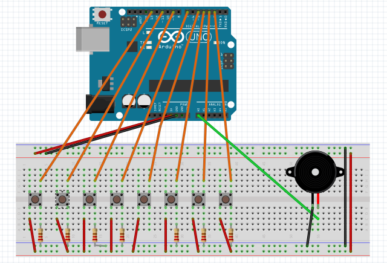

There are many good things you can do with Arduino. My example of using Arduino is to make a piano made of three tones, C, D, E. My piano is controlled by buttons, resistors, and speakers. Piano is placed on the breadboard which receives power from Arduino that is approximately 5 volts from "Power" pins. Buttons get power from the breadboard from button's long "leg". Smaller "leg" sends power back to the main circuit where resistor is placed to control volume of the piano's speaker. Small leg sends button's state to Arduino's "Digital" pins. Arduino processes the readings and processes them into sounds that are send to the speaker from the Arduino's "Analog" pins. To conclude, that is short description of how my piano works. Piano's diagram is included.
As said earlier, buttons send their states to Digital pins declared as input pins. If either pin is pushed, speaker is openned and speaker emits tone from the array. The tone's MIDI value is used to determine tone duration and it is used to delay statements that control paino's speaker. The result is send to output analog pin to which speaker is connected to. If neither button is pushed, speaker is closed. More about code is available below (with explanations).
/* Piano made in Arduino
* Made by Dragi Plakalovic
* Date: 2017-06-15
*/
// Header file that has all musical tones' MIDI values
#include "pitches.h"
// Variables that hold buttons' pin values (Digital)
int button_C = 10;
int button_D = 12;
int button_E = 2;
// Variable for speaker's pin number (Analog)
int speaker = A0;
// "Is the button pushed or not" values are hold by following variables
int buttonstate_C = 0;
int buttonstate_D = 0;
int buttonstate_E = 0;
// Array to hold MIDI values played by the piano
int tones[] = { NOTE_C6, NOTE_D6, NOTE_E6}; // Tones in MIDI
// Tone duration variable
int Cur_tone = 0;
void setup()
{ // Declare button pins as INPUT pins
pinMode(button_C, INPUT);
pinMode(button_D, INPUT);
pinMode(button_E, INPUT);
// Declare speaker pin as OUTPUT pin
pinMode(speaker, OUTPUT);
}
void loop()
{ // Read the input from buttons and place the readings into button state variables
buttonstate_C = digitalRead(button_C);
buttonstate_D = digitalRead(button_D);
buttonstate_E = digitalRead(button_E);
// If any button is pushed, open piano speaker
if((buttonstate_C == HIGH) || (buttonstate_E == HIGH) || (buttonstate_D == HIGH))
{ // Place tone values into tone duration variables based on which button is pushed
if (buttonstate_C == HIGH)
{
Cur_tone = tones[0];
}
if (buttonstate_D == HIGH)
{
Cur_tone = tones[3];
}
if (buttonstate_E == HIGH)
{
Cur_tone = tones[1];
}
// Make sound from tone value delay between speaker statements that open and close the speaker
digitalWrite(speaker, HIGH);
delayMicroseconds(Cur_tone);
digitalWrite(speaker, LOW);
delayMicroseconds(Cur_tone);
}
else // When no button is pushed, close the speaker
{
digitalWrite(speaker, LOW);
}
}